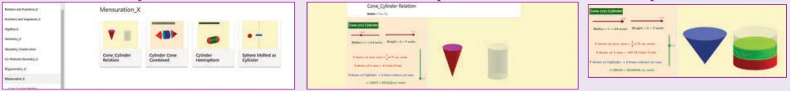
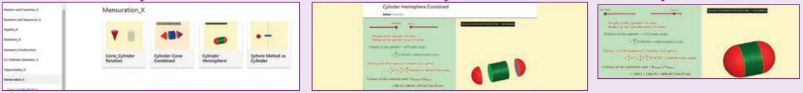

ICT 7.1
Step 1: Open the Browser type the URL Link given below (or) Scan the QR Code. GeoGebra work book named “Mensuration _X” will open. Select the work sheet “Cone-Cylinder relation”
Step 2: In the given worksheet you can change the radius and height of the cone-Cylinder by moving the sliders on the left-hand side. Move the vertical slider, to view cone filled in the cylinder and this proves 3 times cone equal to one cylinder of same radius and same height.

ICT 7.2
Step 1: Open the Browser type the URL Link given below (or) Scan the QR Code. GeoGebra work book named “Mensuration _X” will open. Select the work sheet “Cylinder Hemispheres”
Step 2: In the given worksheet you can change the radius of the Hemisphere-Cylinder by moving the sliders on the left-hand side. Move the slider Attach/Detach to see how combined solid is formed. You can rotate 3-D picture to see the faces. Working is given on the left-hand side. Work out and verify your answer.

You can repeat the same steps for other activities
https://www.geogebra.org/m/jfr2zzgy#chapter/356197
or Scan the QR Code.